Built on Biomechanics.
Proven
by Research.
Prolonged sitting is one of the biggest contributors to spinal compression, disc stress, and posture-related pain. The adjustable two-part back system was designed to solve that problem — not with a one-size-fits-all lumbar pad, but with precision postural control that adapts to every body type.
Backed by independent university research and validated digital human modeling, this system supports the spine where it matters most, at the pelvis and thoracic segments, helping maintain a neutral posture, reduce disc pressure, and prevent long-term strain.
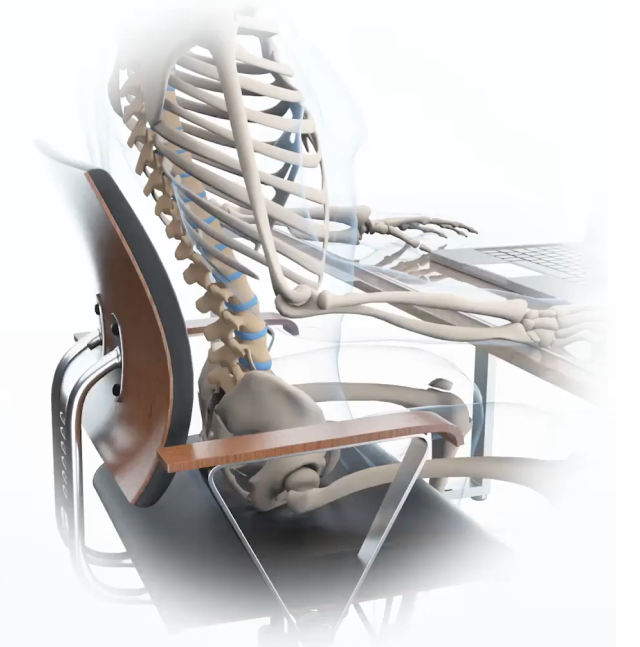
Why Traditional
Backrests Fall Short
Most office chairs use a single, fixed lumbar curve. While it may feel supportive at first, studies show that these systems often fail to match individual spinal shape, leading to:
-
Posterior pelvic tilt and slouched sitting
-
Increased lumbar flexion and disc loading
-
Higher risk of chronic back discomfort
A biomechanical approach was needed, one that considers how real spines move and load under pressure.
THE TWO-PART
SOLUTION:
INDEPENDENT PELVIS AND THORACIC SUPPORT
The Precision Posture System separates the lower and upper back supports, allowing each to move and adjust independently:
-

Pelvis support locks the foundation of the spine in a neutral position, preventing posterior tilt and maintaining healthy disc spacing.
-
Upper back support follows natural thoracic curves, promoting upright posture without restricting shoulder movement.
This Precision Posture System keeps your spine aligned in its mid-range — where disc pressure is minimized, and muscle activity is balanced.
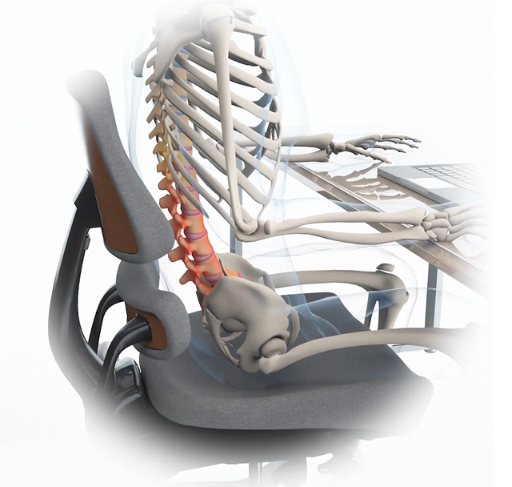
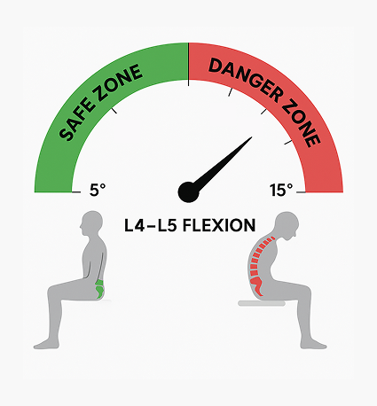
The lumbar spine's two most mobile joints, L4–L5 and L5–S1, are where most flexion and loading occur when sitting. Both Pope et al. (1986) and White & Panjabi (1990) quantified segmental lumbar ranges of motion in healthy adults.
Their data, which have become the accepted clinical and research reference values, report approximately:
| Segment | Flexion ROM |
|---|---|
| L4–L5 | 12–15° |
| L5–S1 | 8–12° |
Source: Data adapted from White, A.A. & Panjabi, M.M. (1990). Clinical Biomechanics of the Spine (2nd ed.). Lippincott Williams & Wilkins; and Pope, M.H. et al. (1986). Electromyographic studies of the lumbar spine. Spine, 11(5), 489–493.
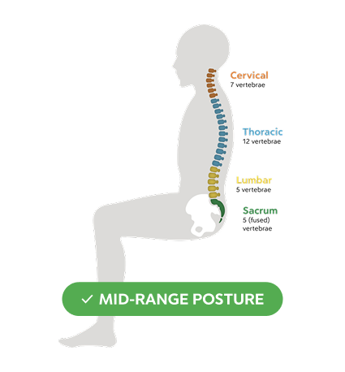
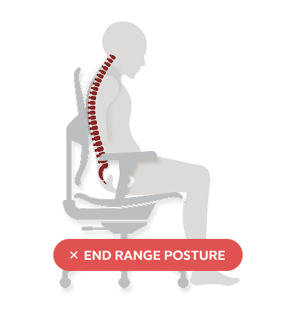
Most of the movement during sitting happens at L4–L5. When a chair lacks proper pelvis support, users often collapse into 14–15° of flexion, placing them near the end range of that motion, where disc pressure and shear forces are highest.
The Precision Posture System is designed to hold users in a mid-range posture.
-
This is the biomechanical sweet spot
-
This may reduce anterior shear
-
This may lower compressive spinal loads
This mid-range alignment was confirmed through both human modeling and independent lab research.
University of
Waterloo
Validation
To evaluate how Anthros performs with real people
during
real work, the University of Waterloo conducted a comprehensive study comparing Anthros to
the
Herman Miller Gaming Embody.
Sixteen adults (even split of men and women)
performed
one
full hour of computer work in each chair while researchers measured spinal and pelvis
position.
The results show reduced posterior pelvic tilt in the Anthros chair:
-
2° less in males
-
4.2° less in females (Equivalent to a 10–20% disc pressure reduction)
Why this matters:
-
Posterior pelvic tilt = slouching → lumbar strain → early fatigue and pain.
-
Reducing it keeps the spine healthy and upright with less effort.
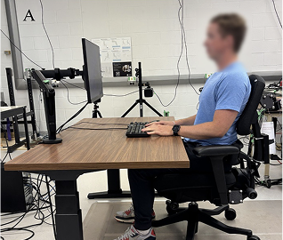
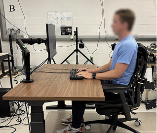
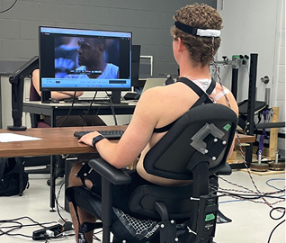
"The chair's lower support was effective in restricting posterior rotation of the pelvis… facilitating a posture closer to neutral."
Digital Human Simulation
Using Simuserv's digital biomechanics tools, disc pressure was simulated across postures:
| Configuration | Simulated Disc Pressure |
|---|---|
| Standard Office Chair | 0.7 MPa |
| Anthros Chair | 0.5 MPa |
| Tilt | 0.3 MPa |
This simulation aligns perfectly with the university findings — showing the two-part system's ability to outperform traditional lumbar designs in load reduction and comfort.
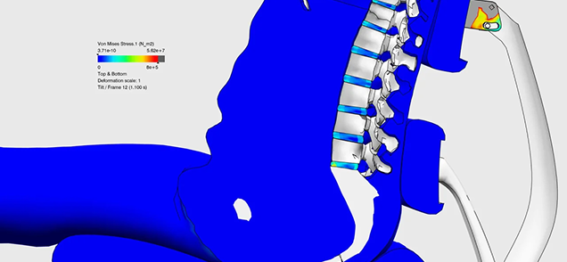
Upper Back Alignment
Less thoracic flexion, more postural stability
One of the most significant findings from the University of Waterloo Spine Biomechanics Lab was the effect of the Anthros dual-back system on thoracic spine posture — the critical upper segment that determines how upright or slouched a person appears while seated.

A More Upright Spine
Participants sitting in the Anthros chair exhibited 3.9° to 5.6° less thoracic spine
flexion than when sitting in a leading ergonomic competitor (Embody).
This means the Anthros chair helped users maintain a more upright, naturally stacked
upper spine — reducing the rounded “hunched” posture that often develops during
prolonged
sitting.
The differences were:
-
Consistent across all users (both male and female)
-
Sustained over time, even after an hour of seated work
-
Most pronounced during reading tasks, where the Anthros upper back support reduced thoracic flexion the most (p < 0.001)
“Participants demonstrated an average 3.9°–5.6° less flexion of the thoracic spine when seated in Anthros compared to Gaming Embody… indicating that Anthros promotes a more upright and supported upper back posture during sitting.”
How the Design Enables It
The Anthros two-part back is what prevents the upper back flexion. With the pelvis supported in neutral, the spine is brought into its natural curves. The hinged and tapered upper back support keeps users in contact with the backrest and provides balanced support at all times.
This design:
-
Prevents upper trunk collapse.
-
Distributes load across the thoracic area without impeding shoulder movement.
-
Encourages active alignment from pelvis to shoulders.
Together with the lower pelvic support, this creates a kinetic chain of alignment — stabilizing the pelvis, aligning the lumbar curve, and reducing thoracic rounding.
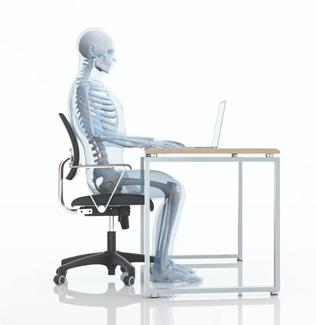
Whole-Spine Optimization
When considered alongside the lumbar and pelvis results:
-
Pelvis control reduced posterior tilt by up to 4.2° in females
-
Thoracic flexion decreased by up to 5.6°
-
Disc pressure dropped to 0.5 MPa (upright) and 0.3 MPa (tilt)
These combined effects form a whole-spine posture correction — maintaining mid-range motion, lowering compressive forces, and allowing the body to sit closer to its natural standing alignment even in prolonged sitting.
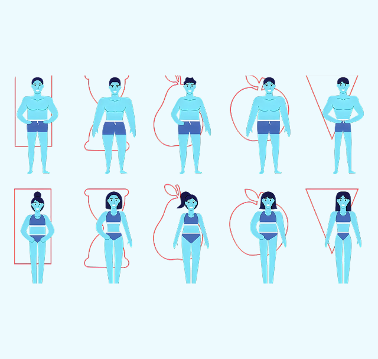
Designed For Every Body
Unlike rigid lumbar pads or single plane backs, this system accommodates the full range of human variation:
-
Adjusts to short and long torsos (5th percentile female to 95th percentile male).
-
Aligns with individual pelvis landmarks.
-
Prevents uneven pressure or over-correction.
Every adjustment is designed to meet your body where it is — and bring it back into healthy alignment.
By reducing passive tissue strain, disc deformation, and end-range spinal loading, it helps preserve long-term spinal integrity.
SCIENCE YOU
CAN SIT ON
This isn’t comfort marketing — it’s biomechanics in action.
Independent university testing and 3D human modeling confirm that the Precision Posture System offers benefits for:
-
Office professionals working long hours at a desk.
-
Gamers seeking posture endurance and reduced fatigue.
-
Long sitters managing spinal conditions.
-
Pain sufferers who have to sit all day.
It’s not just a better chair design, it’s a redefinition of how we support the human body in sitting.
Let Anthros Fix Your Sit®
Have questions? Schedule a posture consult with one of our licensed OT/PT’s.
Shop Now